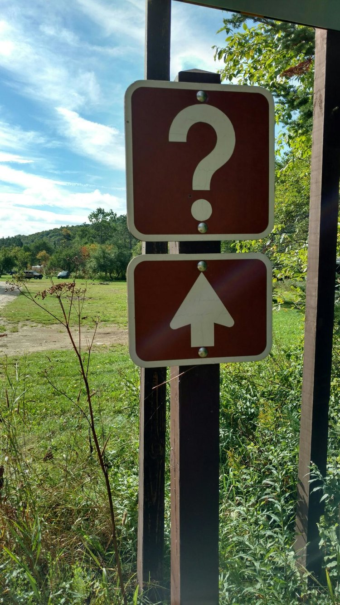
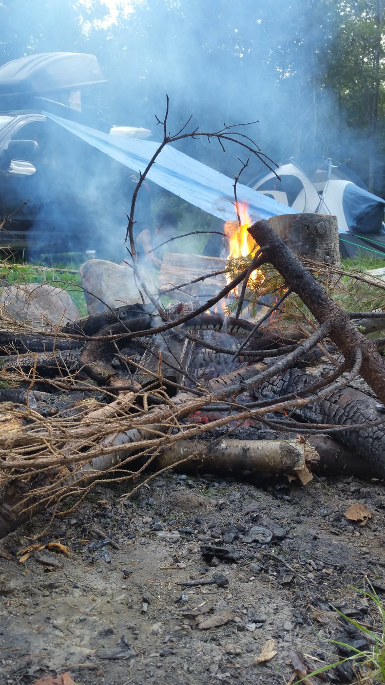
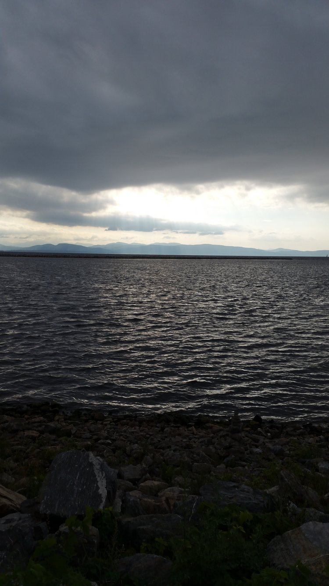

Just two days of camping in and we've crawled out of the woods into Burlington, VT. It's been an awesome time so far.
Camping with a car for a house has proven to be a pretty nice experience--thanks in large part to the National Forest Service. Seriously, Green Mountain National Forest kicks ass. If you didn't know this: there are just places to camp however you like, for up to 2 weeks at a time, free. Sure, you have to drive like 15 minutes off a remote gravel road to get there, but that's like the best part. We spent our first night camping in Somerset, VT, at an abandoned airfield. Despite the rain, it was awesome.
The signs marking the entrance to the campsite. They officially designate information kiosks, but seemed to be saying "up ahead, your guess is as good as ours"
The populace of the campsite was largely locals in big trucks or campers, and they were nearly all gone by the time we awoke early the next morning. Hunters, was our guess.
From there we headed north towards Mt. Equinox (a goal we had gotten sidetracked from on day 1), but we were sidetracked again by the appearance of a towering obelisk in the distance. "What the fuck is that?!" I had shouted, and changed lanes towards it in vain. It was the Bennington Battle Monument, in honor of the Battle of Bennington, 1777. It took us a good 40 minutes to actually get there--half of that just to identify the damn thing--and we accidentally passed into New York, but man was it worth:
"My men, yonder are the Hessians. They were bought for seven pounds and ten pence a man. Are you worth more? Prove it. To-night the American flag floats from yonder hill or Molly Stark sleeps a widow!" ~ John Stark, before the Battle of Bennington
The massive Washington monument lookalike was built into a neighborhood--like, some people's driveways were directly attached to the parking lot. It was the kind of weird, but very classy feel that screamed "old rich." But the view was amazing. Some house even had a fancy pool overlooking the town below and valley beyond. Must be nice.
From there it was back on the road to Mt Equinox. We took Route 7A most of the way, weaving through farms and teeny Vermont towns without even a drug store (where do all the residents work?!?) before arriving in Manchester, VT. Sadly, we never summitted Equinox in our car. Because it costs $20 to do so!! The road is private, and the owner charges $15/car + $5/passenger to use it, so "fuck that," we said. Instead we opted to drive northeast, into the Old Job Wilderness, and perfect our camp setup.
We took a dirt road some 15 miles into the National Forest again, stopping off at Big Branch overlook to take a quick bath at an awesome little swim spot we found off the road (rope swing included!) Our little village of two was setup near the end of the National Forestry Road:
The wood was all wet from the heavy rain the night before, but after an hour or two it was a roaring fire.
We'd seen scarce-a-person for hours, and even the noise of nearby highways had faded into nothingness. It was an awesome experience to be so away from any sort of people or civilization. It reminded me just how simple it is to feel peaceful.

We awoke to dark storm clouds intruding on the beauty of our sunny morning, coupled with the wind we were sure of incoming unpleasantry. So we packed up our little camp and decided to strike out northward some more. The weather kept, however, and we had ourselves a gorgeous drive through the mid-Vermont country, continuing on Rt 7 all the way into Burlington. We stopped briefly at a farmer's market in Shelburne, VT, to grab some much-needed raspberries, before pulling into Burlington proper. After driving around in circles for a little in search of parking, we found ourselves on the lovely Church Street for lunch.

An awesome sculpture in the center of Shelburne, VT. Across from the volunteer fire dept.

Delicious beverages, courtesy of Ken's Pub & Pizza on Church St.
After that we took a walk down to the waterfront and the skate park to smoke a bowl. They had these cute little swing benches hanging all along the water, so of course we just had to sit in one for awhile and soak in the beautiful view. As we walked past a small park, we saw a large group of men playing soccer by a bikepath, a father teaching his son to fly a kite, and two girls doing yoga by the water... and I was struck by the intrinsic beauty of America. So many cultures and walks of life blending together in just a small park in Burlington, Vermont--hardly the most diverse city in the US. I hope that our country can continue to walk this path of everyone "doing them," of everyone having a place, wherever they'd like that place to be. It's an amazing thing to behold.
Magnificent Lake Champlain, and the Adirondack Mountains beyond.
Tomorrow, we're playing off the weather. We're hoping to drink in some more of this beautiful lakeview, and perhaps take advantage of some tasty free brews at the local BCs. If it's warm enough, we're also headed out to Huntington Gorge in Richmond, VT for some swimming. We plan to be spending the next few days in that neck of the woods, returning to civilization somewhere near Portland, ME... but at this point, who knows!!
Thanks for reading, and stay tuned for more!
Mileage: 352
Weather: Partly cloudy, humid, windy, 78F
Currently listening to: Devendra Banhart - What Will We Be